Report 1
Spectral Library
Number of Spectra: 3459
| Total | FL | FR | L | LG | MX | SE | SP | ST | 1G | D | J | M | PE | RE | DS | H | LLRZ | MH | R | S | SS | SY | FFG | FLG | FRG | |
|---|---|---|---|---|---|---|---|---|---|---|---|---|---|---|---|---|---|---|---|---|---|---|---|---|---|---|
| Ammophila_breviligulata | 287 | 0 | 0 | 210 | 0 | 35 | 0 | 0 | 12 | 5 | 3 | 218 | 61 | 0 | 0 | 28 | 104 | 0 | 4 | 0 | 0 | 68 | 57 | 0 | 0 | 0 |
| Baccharis_halimifolia | 260 | 12 | 0 | 217 | 11 | 4 | 0 | 3 | 13 | 76 | 0 | 76 | 104 | 0 | 4 | 37 | 177 | 0 | 0 | 0 | 0 | 46 | 0 | 0 | 45 | 0 |
| Chamaecrista_fasciculata | 83 | 24 | 0 | 31 | 0 | 14 | 0 | 9 | 0 | 21 | 0 | 19 | 22 | 9 | 4 | 24 | 37 | 0 | 0 | 0 | 0 | 0 | 0 | 7 | 54 | 0 |
| Chasmanthium_latifolium | 343 | 0 | 6 | 170 | 0 | 79 | 31 | 0 | 43 | 160 | 11 | 48 | 4 | 13 | 89 | 30 | 270 | 0 | 0 | 0 | 0 | 17 | 0 | 13 | 32 | 35 |
| Ilex_vomitoria | 170 | 0 | 0 | 58 | 29 | 60 | 0 | 0 | 23 | 0 | 0 | 112 | 7 | 6 | 3 | 7 | 121 | 0 | 0 | 0 | 0 | 0 | 0 | 0 | 0 | 0 |
| Iva_frutescens | 305 | 0 | 0 | 286 | 4 | 3 | 3 | 9 | 0 | 5 | 0 | 15 | 193 | 0 | 92 | 46 | 113 | 18 | 0 | 0 | 0 | 61 | 58 | 0 | 15 | 0 |
| Morella_pennsylvanica | 202 | 0 | 14 | 188 | 0 | 0 | 0 | 0 | 0 | 5 | 0 | 0 | 197 | 0 | 0 | 74 | 23 | 0 | 0 | 0 | 0 | 62 | 43 | 22 | 7 | 9 |
| Panicum_amarum | 452 | 26 | 0 | 288 | 0 | 82 | 11 | 0 | 41 | 57 | 0 | 306 | 24 | 54 | 11 | 31 | 291 | 0 | 0 | 0 | 0 | 62 | 64 | 20 | 70 | 17 |
| Panicum_virgatum | 464 | 105 | 0 | 244 | 0 | 45 | 46 | 9 | 11 | 16 | 3 | 370 | 15 | 32 | 7 | 41 | 209 | 0 | 0 | 0 | 0 | 122 | 59 | 12 | 222 | 0 |
| Robinia_hispida | 231 | 0 | 0 | 86 | 43 | 44 | 0 | 0 | 58 | 113 | 0 | 100 | 18 | 0 | 0 | 13 | 218 | 0 | 0 | 0 | 0 | 0 | 0 | 0 | 0 | 0 |
| Rosa_rugosa | 140 | 0 | 0 | 113 | 12 | 6 | 0 | 0 | 9 | 84 | 0 | 47 | 3 | 6 | 0 | 3 | 88 | 8 | 0 | 0 | 41 | 0 | 0 | 0 | 0 | 0 |
| Solidago_rugosa | 253 | 11 | 0 | 230 | 0 | 4 | 0 | 0 | 8 | 11 | 0 | 197 | 21 | 24 | 0 | 34 | 99 | 0 | 0 | 0 | 0 | 59 | 61 | 0 | 46 | 0 |
| Solidago_sempervirens | 269 | 23 | 0 | 216 | 0 | 0 | 3 | 0 | 9 | 87 | 0 | 50 | 95 | 0 | 19 | 27 | 171 | 18 | 0 | 15 | 35 | 0 | 0 | 0 | 57 | 0 |
Spectra totals for each species
Same part of same plant over time (by age)
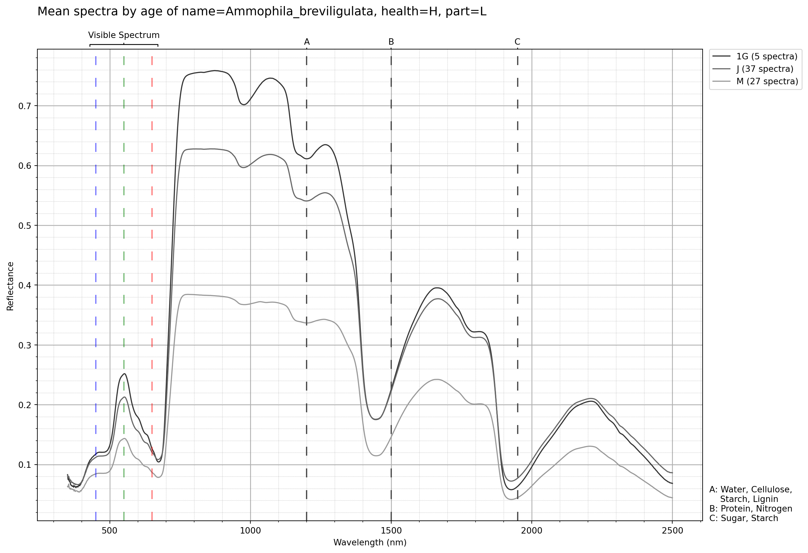
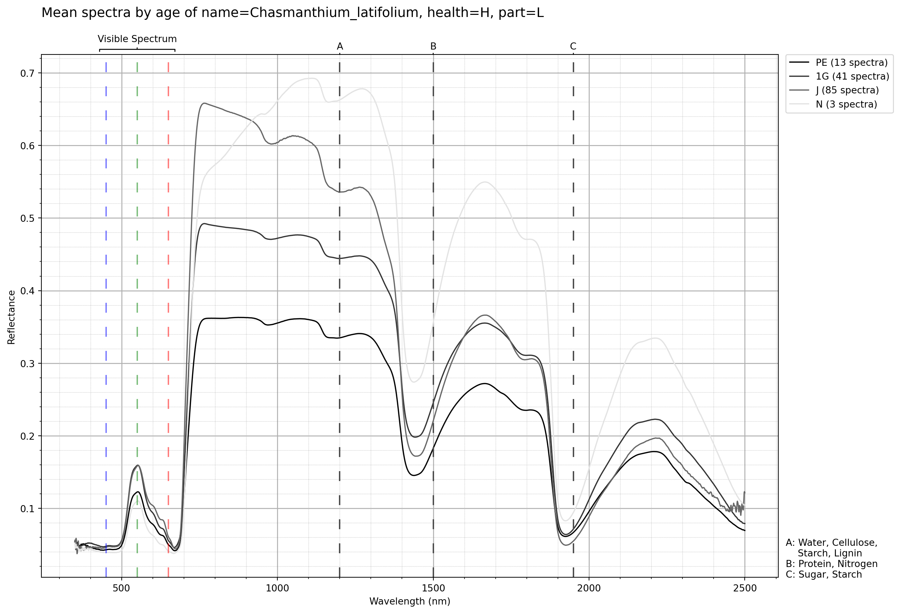
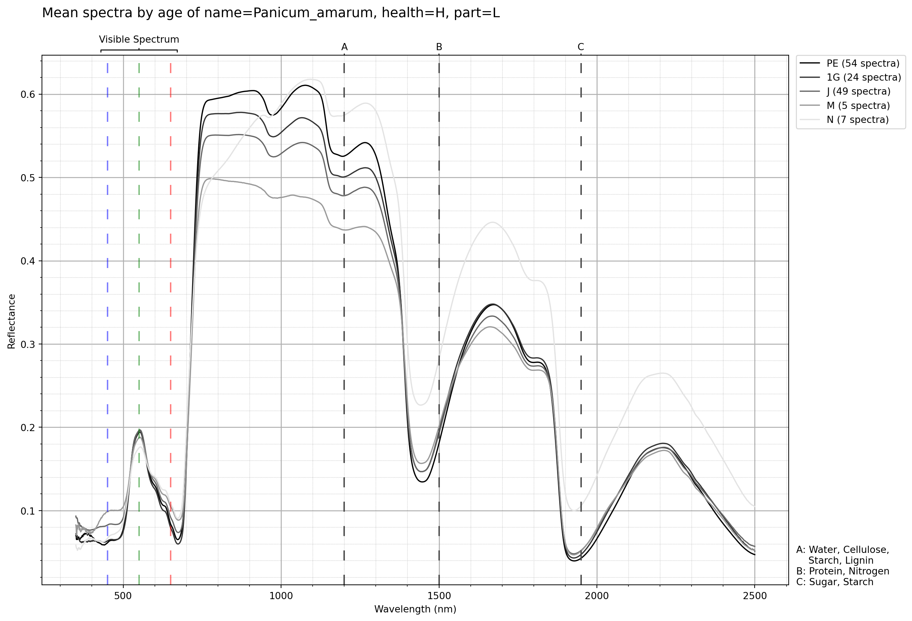
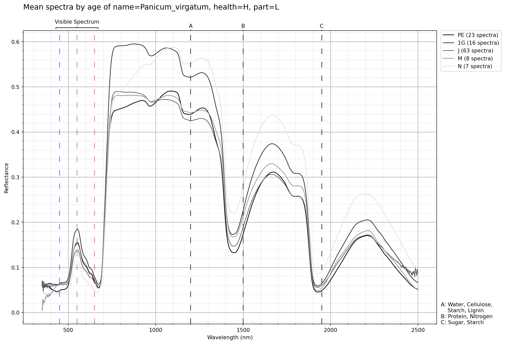
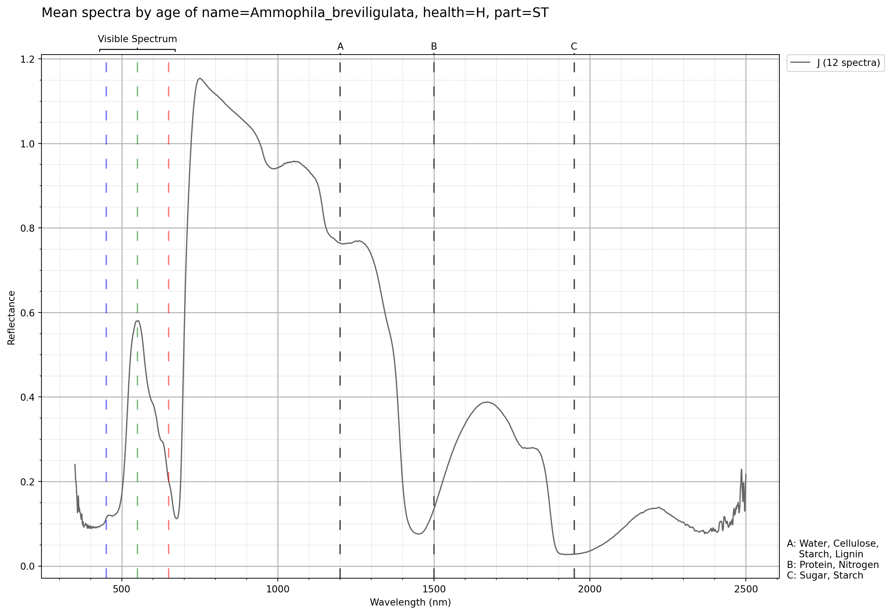


Different parts of the same plant over time
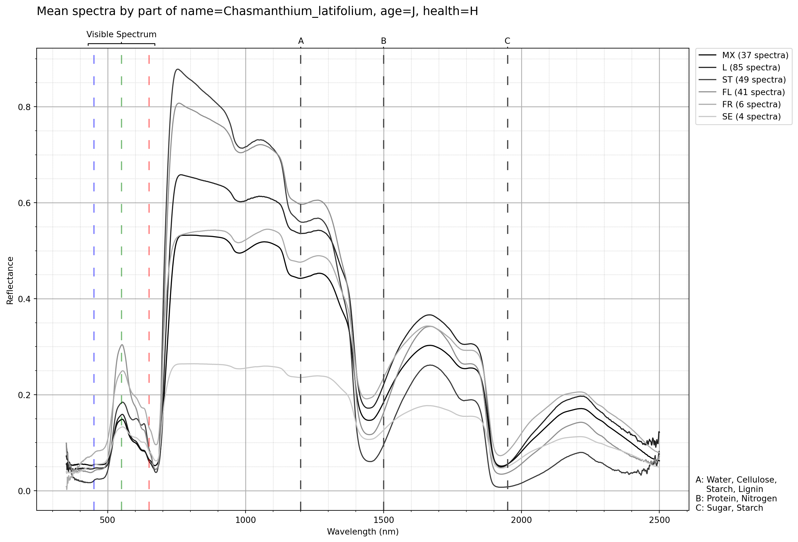
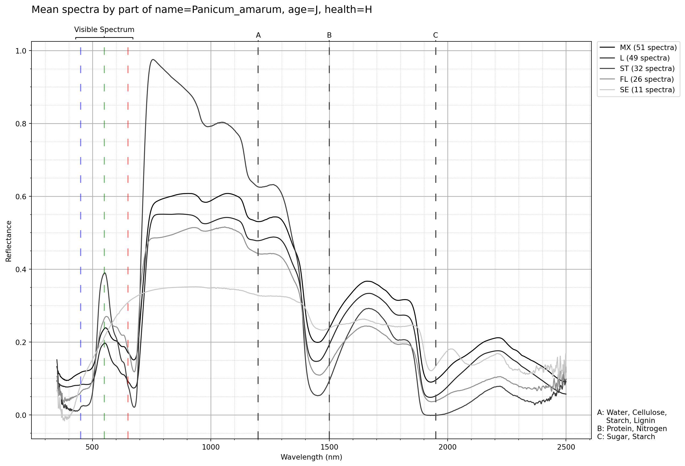
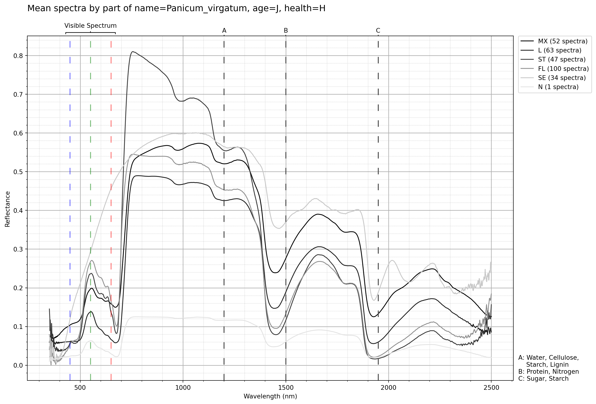
Same part of different plant over time
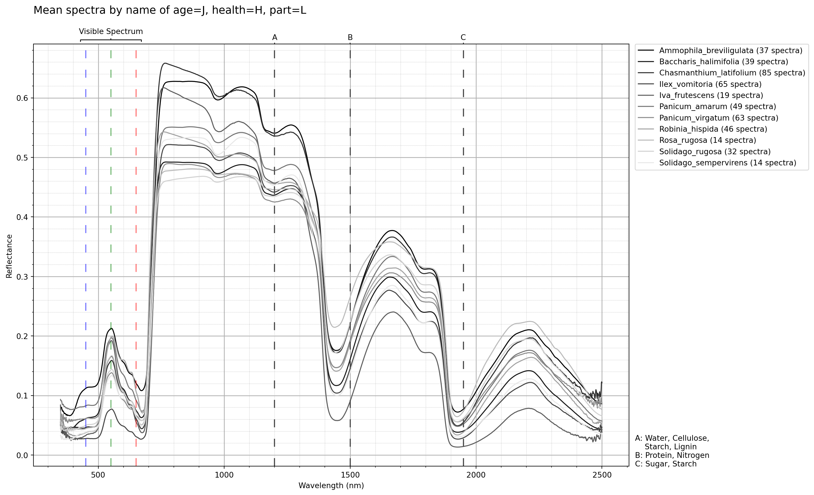
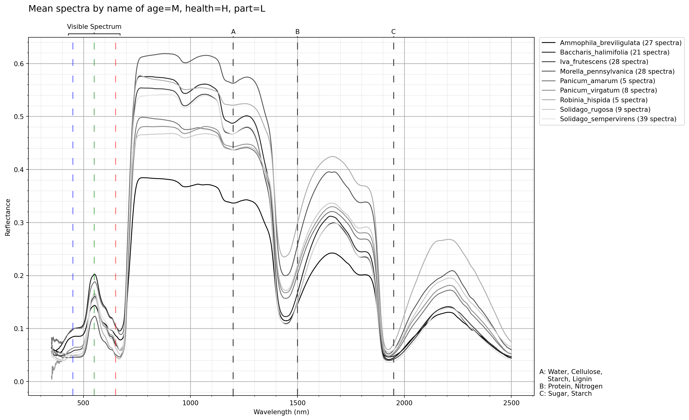
‘RE’ Age Plots
Note
Note the unusual incline after the red edge for spectra originally tagged with ‘RE’ (before mapping to ‘1G’).
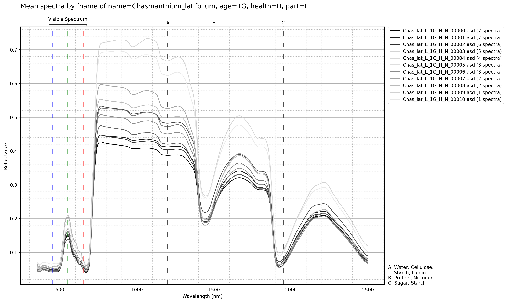
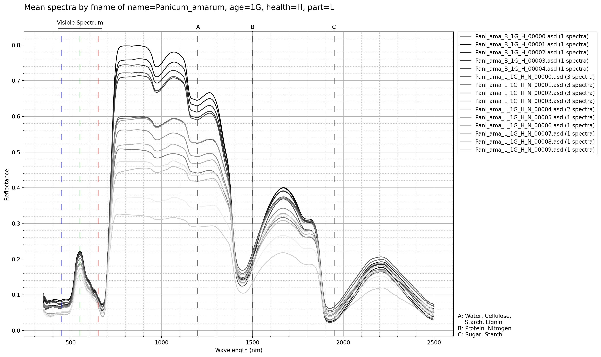